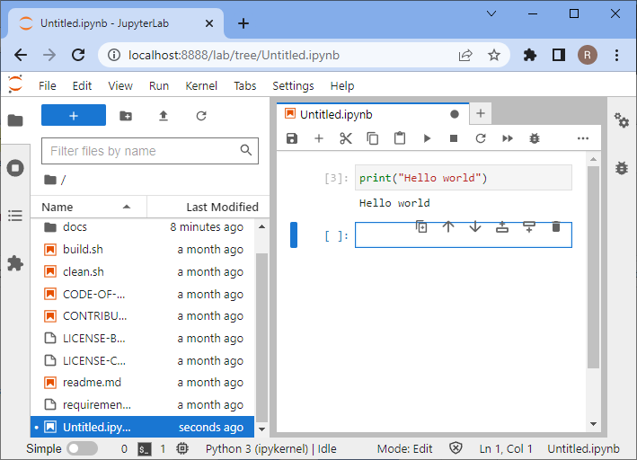

Setting up your computer#
This chapter provides instructions for setting up your computer before the tutorial.
Setting up Python and Conda environments#
When working with Python, we will make use of many plugins and software libraries which need to be organized. One way of doing this, is by managing Conda environments. A conda environment can be seen as a virtual desktop, or virtual computer, accessible via the terminal. If you install some software into one Conda environment, it may not be accessible from another environment. If a Conda environment breaks, e.g. incompatible software was installed, you can just make a new one and start over.
See also
Step 1: Install Miniforge#
Download and install mamba/conda. We recommend the distribution Miniforge.
For ease-of-use, it is recommended to install it for your use only and to add Conda to the PATH variable during installation.


Step 2: Install devbio-napari#
We recommend installing devbio-napari, a distribution of napari with a set of plugins for bioimage analysis.
Use this command from the terminal:
mamba create --name devbio-napari-env python=3.9 devbio-napari pyqt -c conda-forge
Tip: It is recommended to create one environment for every project you are executing. In that way installed software libraries and tools cannot harm each other.
Step 3: Testing the environment and install additional packages#
Afterwards you can activate the environment to work with it. Whenever you want to work on the same project again, you should start a command line and enter this:
mamba activate devbio-napari-env
When activated, use the following lines to install additional required packages for the training:
mamba install plotly seaborn
pip install meteostat
After package installation, try to start Napari from the terminal like this:
naparia
And this window should open:

Close Napari and go ahead.
Start Jupyter lab from the terminal like this
jupyter lab
A browser will open and show you the following web page. In the section Notebook click on “Python 3 (ipykernel)” to create a new notebook:

In the new notebook, click in the first code cell, enter print("Hello world") and hit SHIFT+ENTER on your keyboard.
If everything is installed properly, it should look like this:

To test if your graphics card driver is properly installed, enter this code:
import pyclesperanto_prototype as cle
cle.get_device()

Troubleshooting: Graphics cards drivers#
In case error messages contains “ImportError: DLL load failed while importing cl: The specified procedure could not be found” see also or “”clGetPlatformIDs failed: PLATFORM_NOT_FOUND_KHR”, please install recent drivers for your graphics card and/or OpenCL device.
Select the right driver source depending on your hardware from this list:
Intel GPU drivers(https://www.intel.com/content/www/us/en/download/726609/intel-arc-graphics-windows-dch-driver.html)
Sometimes, mac-users need to install this:
mamba install -c conda-forge ocl_icd_wrapper_apple
Sometimes, linux users need to install this:
mamba install -c conda-forge ocl-icd-system
Troubleshooting: DLL load failed#
In case of error messages such as this one:
[...] _get_win_folder_with_pywin32
from win32com.shell import shellcon, shell
ImportError: DLL load failed while importing shell: The specified procedure could not be found.
Try this command, within the base environment:
conda activate base
pip install --upgrade pywin32==228
Troubleshooting: Meteostat cannot be loaded#
When the import of meteostat fails after installing it with pip, make sure that the pip version of mamba is used for installation by:
~/miniforge3/envs/devbio-napari-env/bin/pip3 install meteostat